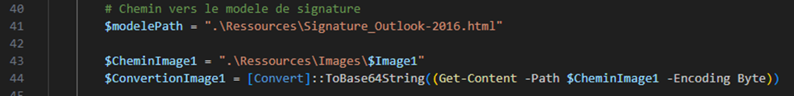

Script Powershell d'attribution de signature de mail personnalisée sur Outlook 2016
L’association où j’ai effectué mon stage utilise une signature de mail pour les employés, laquelle s’appliquait automatiquement. Si les employés voulaient utiliser une signature, ils devaient soit copier celle d’un collègue, oit la recréer eux-mêmes, ce qui pouvait créer un manque d’uniformité. J’ai donc créé un script PowerShell permettant d’attribuer une signature personnalisée à chaque employé en utilisant les informations présentes dans leur compte Active Directory, en se basant sur un modèle au format HTML.
Explication des étapes du scripts :
• Création d'un fichier de logs dans le dossier : .\Log\
• Récupération de la liste des "homedir"
Les homedir sont nommés à partir du nom d’utilisateur donc récupérer leur nom permet de récupérer les noms d’utilisateurs.
Le fait de se basé sur le nom des homedir permet d’éviter que le script tente d’appliquer la signature à un compte qui ne possède pas de homedir comme un compte de service, cela limite donc les tentatives inutiles.

• Récupération des infos de chaque utilisateur et vérification de leur présence dans l'AD
• Récupération des infos des utilisateurs
• Le chemin vers le fichier HTML modèle et celui vers l'image à intégrer dans la signature sont nécessaires. L'image est convertie en Base 64, ce qui permet son intégration directe dans le code HTML du mail. Cette méthode évite la nécessité de placer l'image sur un serveur et d'insérer un lien vers celle-ci.
• Récupération du contenu du fichier HTML et remplacement des valeurs {Nom}, {Fonction}, {Etablissement}… par les valeurs correspondantes
• Création du fichier de signature
Le contenu du fichier HTML modifié est intégré dans un fichier au format .htm se trouvant dans le dossier :
\\srv-fichiers\homedir$\